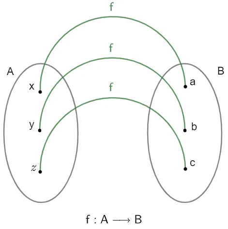
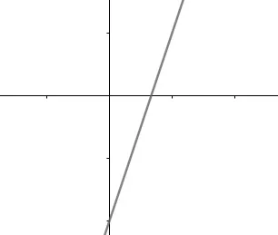
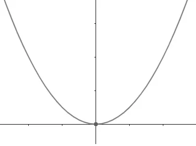
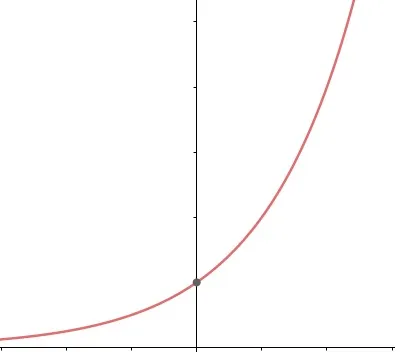
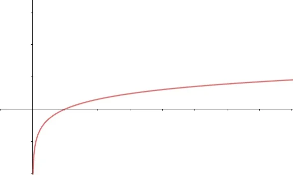

O que são Funções?
Função é uma relação de um conjunto não vazio em outro conjunto também não vazio, em que cada elemento do primeiro conjunto relaciona-se com um único elemento do outro.
É uma aplicação que relaciona os elementos de dois conjuntos não vazios. Considere dois conjuntos não vazios A e B, em que uma função f relaciona cada elemento de A a um único elemento de B.
Conceitos Básicos
- Domínio: Conjunto de todos os valores de entrada (x).
- Imagem: Subconjunto do contradomínio formado pelos elementos que possuem correspondente.


As funções são essenciais para prever comportamentos, como o crescimento de uma população ou a trajetória de um objeto.
Classificação de funções
- Função Injetora: Cada elemento do conjunto A tem um elemento exclusivo no conjunto B.
- Função Sobrejetora: O conjunto Imagem é igual ao Contradomínio (não sobra ninguém em B).
- Função Bijetora: Quando ela é as duas coisas ao mesmo tempo.
Função do 1º Grau
É definida por f(x) = ax + b. Seu gráfico é sempre uma reta. Quando a > 0 a reta sobe, quando a < 0 a reta desce.
Exemplo: f(x) = 2x + 3. Para x = 1, o resultado é 5.
Função do 2º Grau
É definida por f(x) = ax² + bx + c. Seu gráfico é uma parábola. Quando a > 0 a parábola abre para cima, quando a < 0 abre para baixo.
Exemplo: f(x) = x² − 4. As raízes são x = 2 e x = −2.
Função Exponencial
É definida por f(x) = aˣ. Aparece em situações de crescimento rápido, como juros compostos e crescimento populacional.
Exemplo: f(x) = 2ˣ. Para x = 3, o resultado é 8.
Função Logarítmica
É a inversa da função exponencial. Usada em escalas como a de pH e a escala Richter.
Exemplo: log₁₀(1000) = 3, porque 10³ = 1000.
Voltar ao topoGaleria de Gráficos
Abaixo, veja os principais tipos de funções estudados no Ensino Médio:



Referências:
BRASIL ESCOLA. Funções. Disponível em: brasilescola.uol.com.br